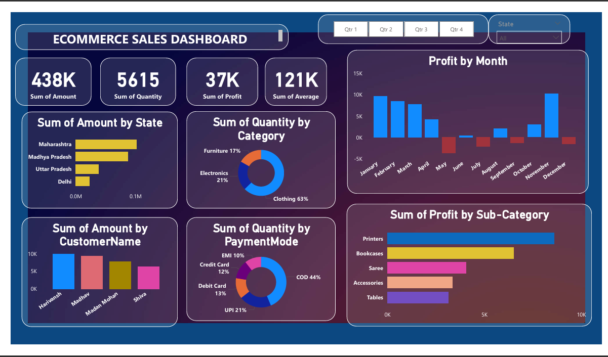
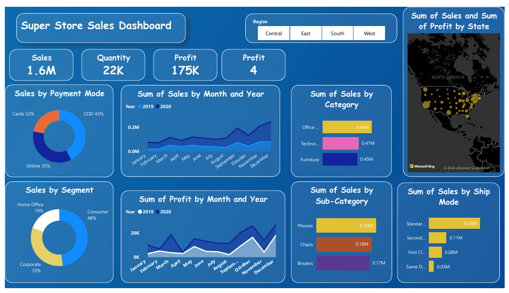
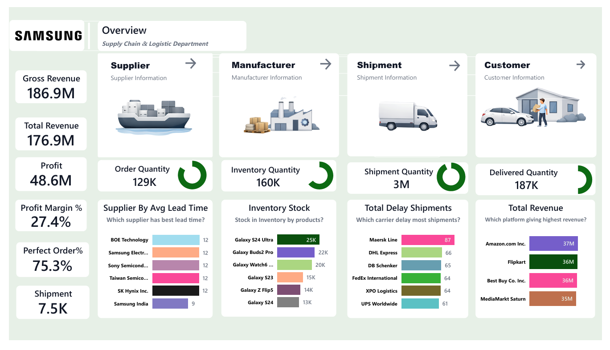

My Dashboards

E-commerce Sales Dashboard
Comprehensive sales analysis dashboard with interactive visualizations and KPI tracking. Analyzed sales trends, customer segments, and revenue patterns to drive business growth.

HR Analytics Dashboard
HR dashboard analyzing employee count, attrition rate, salary slabs and department-wise insights for strategic workforce planning.

Super Store Sales Dashboard
Time-series based sales forecasting dashboard with category-wise performance insights to support data-driven decisions.

HR Dashboard
Designed an end-to-end HR Analytics Dashboard in Power BI using raw and unstructured CSV data. Cleaned and transformed using Power Query for meaningful analysis. Built interactive, multi-page reports with intuitive navigation and visually rich charts to present employee insights effectively.

Supply Chain & Logistics Dashboard (Samsung)
Developed a Supply Chain & Logistics Dashboard in Power BI based on Samsung-related data, where I personally designed and structured the dataset. Analyzed revenue, profit margins, inventory levels, shipment performance, supplier lead time, and delay insights.

Breaking the Silence:Violence Against Women
Developed an interactive Power BI dashboard analyzing global data on violence against women.